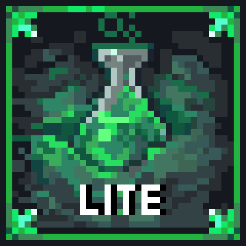
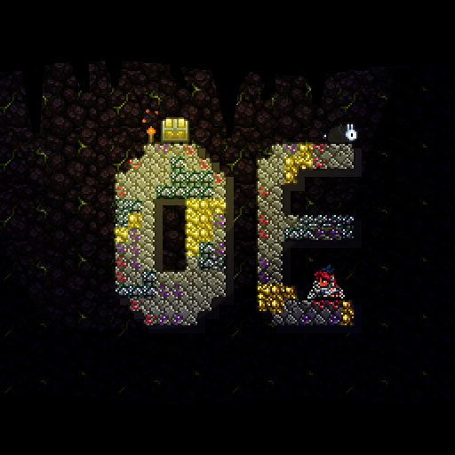

Terraria Mods — Curated Recommendations
Hand-picked mods worth installing in 2026. Categorized by what they do — content expansions, quality-of-life improvements, and total overhauls. All available on the Steam Workshop and TModLoader.
New to modding? Start here.
Install the free tModLoader on Steam, browse mods from the Workshop, and enable them in three steps. No technical skills needed.
How to Install & Use Mods →Content Mods
Massive expansions adding new bosses, biomes, items, and classes.

Calamity Mod
The largest Terraria mod. 25+ bosses, 2000+ items, new biomes, post-Moon Lord content, and insane difficulty scaling.

Thorium Mod
Vanilla-plus expansion. New Bard and Healer classes, 80+ items per boss, and content that feels like it belongs in the base game.

Fargo's Souls Mod
Enchantment system, Eternity Mode (extreme difficulty), and the soul mod's unique boss summon items.
Quality of Life
Make the game less tedious without changing balance. Install all of these.

Magic Storage
Centralized item storage system. Deposit all items in one place, search, and craft from the storage network.

AlchemistNPC
Adds NPCs that sell potions, materials, and boss summons. No more grinding for potion ingredients.

VeinMiner
Hold a hotkey and mine an entire ore vein at once. Saves hours of mining time over a full playthrough.

Boss Checklist
In-game boss checklist showing what you've defeated, what's next, and how to summon the next boss.

Recipe Browser
Search any item's crafting recipe or usage. Better than alt-tabbing to the wiki every 30 seconds.